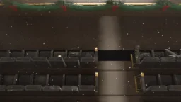
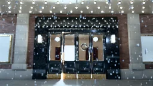
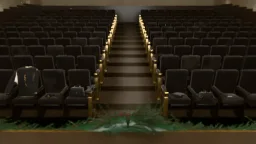
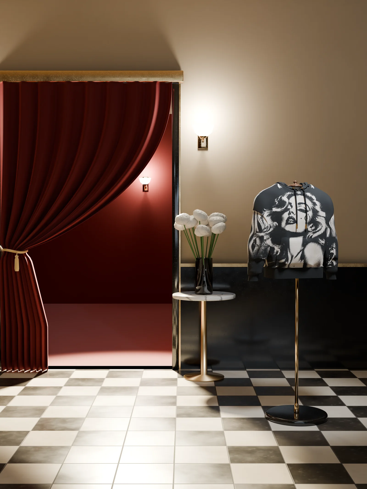
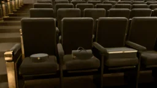
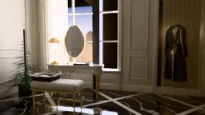
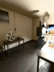

a seat is kept for you
Chapter I
prologue
There is a cinema that runs one last show on Christmas Eve.
Nobody remembers buying a ticket. A seat is simply kept: a small card on the cushion, one mark on the card, and no name. None is needed.
Tonight the front row is full but for one.

STAND-IN · img/book/plate-prologue/master.* (the plate for Prologue: The front row from behind, house dark, the screen glowing.; 8K, 7680 × 4320)The front row from behind, house dark, the screen glowing.
Kept: The one empty seat, its card on the cushion.
reel one
i. snow
It had been snowing since four. By the last show the street under the marquee had gone quiet, the way streets do when everyone who is coming has already come.
The coat came anyway.
Snow lit on a shoulder cut open like lace held to a lamp, cream silk behind the net. A hem swung past, solid and black. Eight buttons, a belt, a strap at the cuff, each one under the bulbs and gone. Late, and not hurrying.
Under the marquee in falling snow: the net on the coat’s shoulder, close, the bulbs behind.
Kept: The marquee, lit for someone still to come.
GELOSIA, THE VEIL COAT · ENTERS · I
- It begins as black lambskin, 1.0 to 1.2 mm, cut as panels on a flat bed.
- A net of diamonds is cut through each panel: 7.0 by 9.0 mm apart, the narrowest strand 2.7 mm.
- The net is open at the collar and shoulders and closes to solid leather above the knee.
- Every seam and edge keeps 4.5 mm of solid leather, and the two backs mirror each other at the centre seam.
- It closes with eight buttons, a belt and a strap at each cuff, and ends at mid-calf.
- One mark is cut at the centre back, 40.0 mm tall, 29 cm above the hem.
Behind it: opaque cream silk, bonded to the leather, 1.6 mm back from the face. Only cream shows through.
Walk around Gelosiaii. the doors
One wreath hung on the brass doors. Nothing else said what night it was.
From behind, as it reached them, a single mark showed low on the coat’s back, cut through to the cream. A cuff rose toward the brass and stopped short. Some doors are not for opening yourself.
The door swung inward untouched, the way a hand is held out, and the coat went in out of the snow.

STAND-IN · img/book/plate-ii/master.* (the plate for II. The Doors: The brass doors and the wreath, the coat’s cuff at the edge of the frame.; 8K, 7680 × 4320)The brass doors and the wreath, the coat’s cuff at the edge of the frame.
Kept: One door standing open, untouched.
iii. the aisle
Inside, the projector was already running and the screen had begun to count. Three. The coat came down the aisle faster than it meant to.
Two. The screen’s light met it halfway. Over the back of a seat hung a bomber, Ödara, and from behind, its leather held a woman’s face made entirely of holes, cream showing through each one.
On the arm of the seat at the aisle’s end lay a pair of long gloves, Ritornelo, flat, fingers together, the way a thing is left to say someone is coming back.
Down the centre aisle toward the screen, “3” on it, seat backs passing.
Kept: The aisle itself, clear to the front row.
ÖDARA, THE MUSE BOMBER · ENTERS · III
- It begins as five pieces of black lambskin: two fronts, one back, two sleeves, 0.88 m² in all.
- The back is cut through as round holes on a 5 mm screen at 45 degrees; her tone sets each hole’s size.
- No hole is over 4 mm or under 0.7 mm, and none comes within 15 mm of a seam.
- The mark is cut whole on her cheek, 39.5 mm tall, with 2.5 mm of solid leather round it.
- Collar, cuffs and hem are the house 1x1 rib, with two 5 mm cream stripes 5 mm apart.
- It closes on a gold zip, teeth at 3.2 mm, its pull a 24 mm disc engraved with the mark.
Inside it: cream silk charmeuse. On the lining of the back, a kiss printed in black, 30 cm wide.
Walk around ÖdaraRITORNELO, THE OPERA GLOVES · ENTERS · III
- Each begins as black lambskin, cut round the hand and arm with one long seam down the little finger’s side.
- It runs 53 cm from fingertip to top edge: 20 cm of hand, 33 cm of arm.
- The leather is solid to 5 cm above the wrist, then the coat’s own net opens, fully open for the last 7 cm.
- Three points are raised on the back of the hand: 60, 66 and 59 mm.
- It closes at the inside of the wrist: a 36 mm slit, a 10 mm gold snap, the mark engraved 7 mm tall.
Inside it: the coat’s cream silk, from the wrist to the top edge.
Walk around Ritorneloiv. the front row
Every seat in the front row was taken, and not by people.
Coema, a small duffel, sat with its handles down. Beside it Voluta, a round bag shaped like the can a film travels in. Across the aisle, Itaoca, a bag with one handle, lowered; then Coaraci, a belt, coiled, its gold disc turned to the screen like a face.
They sat the way an audience sits when it already knows the film: still, front to the light, wanting nothing explained.

STAND-IN · img/book/plate-iv/master.* (the plate for IV. The Front Row: The whole row from in front, every piece in its seat, the screen’s light on them.; 8K, 7680 × 4320)The whole row from in front, every piece in its seat, the screen’s light on them.
Kept: Seat L2, empty among the taken seats.
COEMA, THE MATINEE · ENTERS · IV
- It begins as one panel of black calfskin, 2 mm thick, wrapped round a flat base and closed by two piped ends.
- It measures about 25 by 11 by 11.5 cm.
- One row of squares is pressed round the body, 0.45 mm deep, each square 43 by 45 mm.
- It is carried by two short rolled handles on gold rings, or by a strap 20 mm wide and 3.5 mm thick.
- It closes on a gold zip with two sliders, and stands on four gold feet.
- A leather charm, 23 by 38 mm, hangs from the front handle’s ring with a 12.5 mm gold plate.
Inside it: cream suede, printed with a couple in black halftone.
Walk around CoemaVOLUTA, THE REEL · ENTERS · IV
- It begins as a circle of black calfskin: 22 cm across, 7 cm deep.
- Sixteen squares are pressed round the side band, 0.4 mm deep, each 43.2 by 44.9 mm.
- The lid is pressed with four fine rings and hinged at the back on a leather strip.
- It closes at the front on a round gold disc, 24 mm.
- The strap is 12 mm wide and folds through a gold ring on each side.
Inside it: cream suede, and the mark pressed 0.8 mm into the suede of the lid.
Walk around VolutaITAOCA, THE PÖ TOP-HANDLE · ENTERS · IV
- It begins as black calfskin on a trapezoid: 31 cm at the base, 26.2 cm at the top, 19.8 cm tall.
- One flap runs from a hinge on the top to half the height of the front.
- A panel of 7 by 2 squares is pressed into the flap, 0.55 mm deep, with 8 mm of plain leather round it. The flap alone carries the monogram.
- The handle is rolled, 18 by 16 mm, and rises 11 cm above the top on two 22 mm gold rings.
- It closes on the house disc, 24 mm, the mark engraved 16 mm tall.
Inside it: cream suede, on the body and under the flap.
Walk around ItaocaCOARACI, THE DISC BELT · ENTERS · IV
- It begins as two layers of black calfskin: 30 mm wide, 3.6 mm thick, 105 cm from bar to tip.
- It is stitched 3.0 mm in from each edge, a stitch every 3.5 mm, and the edges are painted.
- Five holes are punched, 4.5 mm across, 25 mm apart, the first 90 mm from the tip.
- It closes on a gold disc, 40 mm, the mark engraved 26 mm tall.
Behind it: a 2.4 mm gold bar on two posts and a 1.5 mm prong. From the front, the disc is all there is.
Walk around Coaraciv. the kept seat
One seat was empty: third from the aisle, on the left. On its cushion stood a small card, and on the card a single mark. An O, two dots above it, a line drawn through.
The screen never said one.
The coat sat. The leather settled the way heavy things settle, all at once and then a little more. The sleeves found the arms of the seat. Eight buttons caught the light and kept it.
 STAND-IN · img/book/plate-v/master.* (the plate for V. The Kept Seat: Seat L2 from above the seat in front, close.; 8K, 5760 × 7680)
STAND-IN · img/book/plate-v/master.* (the plate for V. The Kept Seat: Seat L2 from above the seat in front, close.; 8K, 5760 × 7680)Seat L2 from above the seat in front, close.
Kept: The card with the mark, standing on the cushion.
vi. reel one
The picture was new. So new that none of it had happened yet.
A lobby, the curtain to the house tied back. By it stood Heliodora, a black hoodie on its form, its back to the room, a cream kiss knitted on it, every dot a stitch. In a café, Cordel, a scarf knotted on the table beside a second cup, still warm. Under the marquee, a car with its passenger door open, and on the dash a pair of dark glasses, Öfusca, folded.
Then the street outside, in snow, the same snow as tonight. In the front row the screen’s light crossed the coat’s net and went through to the silk.

STAND-IN · img/book/plate-vi/master.* (the plate for VI. Reel One: The lobby outside the house: Heliodora on its form by the curtain, the kiss on its back.; 8K, 5760 × 7680)The lobby outside the house: Heliodora on its form by the curtain, the kiss on its back.
Kept: The curtain to the house, tied back.
HELIODORA, THE MUSE · ENTERS · VI
- It begins as a chart, one value for each stitch: the front alone is 722 stitches by 1,030.
- It is knitted as a 28-gauge double jacquard in black and cream, 11 stitches by 16 rows to the centimetre.
- Her portrait is the front; her hair runs onto the sleeves and thins to single dots by the cuff.
- On the back, one kiss, 208 by 133 mm, tilted 12 degrees, the mark beside it at 6.0 by 4.8 cm.
- Round them, 80 mm of plain black. Dust rises from the hem and stops at 31% of the height.
- The hood is plain black. It closes on black cords through gold eyelets, ending in gold tips.
Behind it: a second bed of stitches. Every stitch is knitted front and back, so no loose thread crosses the inside.
Walk around HeliodoraÖFUSCA, THE STAR IN SHADES SUNGLASSES · ENTERS · VI
- The front begins as black acetate, about 5 mm thick: 136 mm wide, 49 mm tall.
- It takes two 52 mm lenses across a 16 mm bridge, grey, darker at the top.
- The temples are 130 mm, 11 mm tall at the hinge, on five-barrel steel hinges.
- A round gold plate, 8 mm, sits on the outside of each temple with the mark engraved 5.9 mm tall.
- They close into a black leather case, 164 by 60 by 52 mm, under a 22 mm gold disc.
Inside them: a flat steel core in each temple. Inside the case: cream suede.
Walk around ÖfuscaÖBOLO, THE CARD HOLDER · ENTERS · VI
- It begins as layers of black calfskin: a 1.0 mm back, a 0.7 mm pocket face, three 0.6 mm slots a side.
- It measures 100 by 70 mm, with corners rounded at 4 mm.
- The slot mouths step down at 55, 48 and 41 mm.
- It is stitched 3.0 mm in, a stitch every 3.5 mm, and the layers are painted as one edge.
- On the back, a 12 mm gold disc is set flush, the mark engraved 8.9 mm tall.
Inside it: a centre pocket, open along the top, with a thumb notch 24 mm wide and 6 mm deep.
Walk around ÖboloCORDEL, THE SILK SCARF · ENTERS · VI
- It begins as a print file: 90 by 90 cm of silk twill, two colours, black and cream.
- A border of 8 cm of black carries one cream line, 2.7 mm wide.
- A strip of film runs down the centre, 32.2 cm wide, four sprocket holes to a frame.
- It holds four frames, each 22 by 16 cm, all on one screen of round dots at 45 degrees.
- The edge is rolled onto the face, about 4 mm across, and caught by a stitch every 5.2 mm.
- One mark sits in a corner of the border, 3 cm tall.
Behind it: the same print, seen through the silk, mirrored and fainter.
Walk around Cordelreel two
vii. reel two
A suite by day, the vanity stool pulled out and turned to the door. Beside the vanity, Cantilena, a hoodie in squares, a P and an Ö and a P again, black and cream; the same in cream on cream folded at its foot. Then the suite at midnight: one lamp left on, the bed turned down on one side, Alvor, a slip of cream silk, on the wardrobe door.
The screen went pale, and in the kept seat eight buttons went pale with it.
Last, the same suite in morning light. A bench, a window, a rail with one hanger. Nothing on any of them yet.
The suite at midnight: Alvor on the wardrobe door.
Kept: The lamp left on; the bed turned down on one side.
ALVOR, THE SILK SLIP · ENTERS · VII
- It begins as cream silk satin, cut on the bias.
- At the front, 16 cm is let out between the straps to fall as a cowl.
- The straps are black silk, 4 mm, set 8.8 cm either side of the centre.
- The back scoops low, below the shoulder blades, and the top edge is bound.
- It ends at mid-calf.
On it: no text and no logo.
Walk around AlvorCANTILENA, THE PÖ HOODIE · ENTERS · VII
- It begins as a chart: a checker of squares, each 88 stitches by 133 rows, 8.0 by 8.3 cm.
- A light P sits on each dark square, a dark Ö on each light one.
- It comes in two colours: black and cream, or cream on cream, a darker cream in the black’s place.
- The rows run level across the body, a square centred on the centre line; the sleeves take whole squares from the cuff.
- The hood is two panels, the checker knitted whole on each, a light square meeting a dark one along the centre seam.
- It is the house knit, the rib and cords in the darker yarn, the cords through gold eyelets, ending in gold tips.
Behind it: the checker runs on unbroken into the hood’s facing, the same cloth rolled inward.
Walk around Cantilenaviii. house lights
The lights came up the way they always do, too soon.
The row was as it had been. Coema with its handles down, Ritornelo flat on its arm, Coaraci coiled, its disc still turned to a screen gone white. Nothing had moved. A good film does that.
The coat’s seat was empty. On the cushion, where the card had been, sat a black box with a gold disc in its lid.

STAND-IN · img/book/plate-viii/master.* (the plate for VIII. House Lights: The row with the lights up, every piece in its seat.; 8K, 7680 × 4320)The row with the lights up, every piece in its seat.
Kept: Seat L2: the black box with its gold disc where the card stood.
ix. the morning
Christmas morning, in the suite the screen had shown. The rail by the window held the coat. In the corner stood a small fir.
On the bench, the box, open: black knit in its tissue, and on it the card from the seat. One mark. Still no name.
The seat was kept for the coat. The coat is kept for you.

STAND-IN · img/book/plate-ix/master.* (the plate for IX. The Morning: The suite on Christmas morning: the coat on its rail by the window, the fir in the corner.; 8K, 7680 × 4320)The suite on Christmas morning: the coat on its rail by the window, the fir in the corner.
Kept: The box open on the bench, the card inside it.
chapter i
coda
Up in the booth, the first reel came off the projector and another went on.
In the empty house the new leader ran, and read, in red: II.

STAND-IN · img/book/plate-coda/master.* (the plate for the coda: The booth: one reel off the projector, another on.; 8K, 5760 × 7680)The booth: one reel off the projector, another on.
Kept: Every seat in the house, empty.
PHAÖRA is a house of knitwear, leather and silk, in black, cream and gold. Chapter I is its first line: fifteen pieces, each one a stitch chart, a cut plan or a print file before it is anything else.
thank you for the pleasure of your company.
kept for